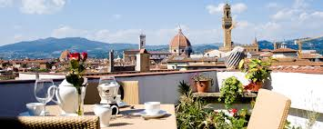
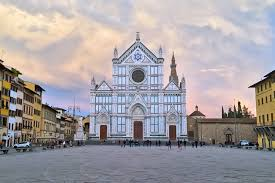
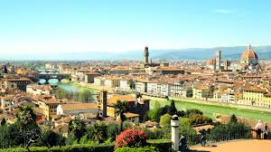

Florence's museums, palaces, and churches house some of the greatest artistic treasures in the world. The most popular and important sites in Florence include the Cathedral, the Baptistery, the Uffizi, the Bargello, and the Accademia. The churches of Santa Maria Novella and Santa Croce are veritable art galleries, and the library of San Lorenzo is a magnificent exhibition of Michelangelo's architectural genius.

Dining in Italy:Well-suited for time-limited travelers, this Florence day trip lets you conquer Tuscany's must-see sights in a day. Snap photos in front of the UNESCO World Heritage-listed Leaning Tower of Pisa (skip-the-line admission ticket available as an upgrade); taste wine in the Chianti region; and explore medieval San Gimignano. Plus, you'll travel between each place with ease and relax knowing the entire day is planned out in advance.Make your way to the Santa Maria Novella Train Station in central Florence for your morning departure. Once you climb aboard the air-conditioned coach, sit back and relax, knowing that the rest of the whirlwind day in Tuscany is planned in advance for you. The day's first stop is the city of Siena, where you can choose to take a guided city tour, including entrance to Siena Cathedral, or explore independently at your own pace. Leaving Siena, enjoy the scenery as the bus enters the Chianti wine region. Arrive at a vineyard, where you can explore the wine cellar and olive grove, then sit down for a traditional Tuscan lunch comprised of fresh bread, pasta, salad, and cold cuts, accompanied by a wine tasting. Following lunch travel onward to San Gimignano, where you'll explore the squares, cobbled streets, and medieval towers on a guided tour. The day's last stop is Pisa, where you will visit Cathedral Square, home to the Pisa Duomo, Baptistry, and the Camposanto monumental cemetery. At the famous Leaning Tower of Pisa, you can upgrade your tour to include a skip-the-line admission ticket.
Day Tours:The UNESCO-listed landscapes of the Cinque Terre National Park are a must-see site. Visit four of the five Cinque Terre fishing towns on a stress-free day trip from Florence, an easy way to eliminate the hassle of renting a car or dealing with public transport. Travel between Riomaggiore, Manarola, Monterosso, and Vernazza by coach bus, boat, and train, and let a guide bring the history of each village to life. After greeting your guide in central Florence, board an air-conditioned coach destined for the Cinque Terre National Park, a UNESCO World Heritage Site renowned for its colorful seaside towns. The first stop is Riomaggiore, replete with pastel-colored buildings and cobbled streets that are best revealed on a walking tour. Then, continue to Manarola to stroll around the harbor and snap photographs of the houses that cling to the cliffs. Travel to Monterosso by boat where, if you’ve upgraded to include lunch, you can enjoy seafood and pasta accompanied by wine at a local restaurant. Opt to sunbathe and swim at a nearby beach before you continue to Vernazza, known for its olive-oil production. Your guided tour concludes with drop-off at your original departure point in Florence.

Guided Boat Tours:Experience the unspoilt splendor of Oman’s Musandam Peninsula from the water on a full-day trip from Dubai. Travel to mountainous Musandam, a pocket-sized chunk of Oman northeast of Dubai, and settle aboard a wooden ‘dhow’ sailboat at Dibba for a 5.5-hour cruise. Then, simply sit back and drink in the gorgeous scenery and seascapes as you waft by rocky peaks, secluded coves and sandy beaches. Watch for pods of dolphins, stop to bathe or snorkel, and stay refreshed with unlimited complimentary sodas and a scrumptious Arabic buffet lunch on deck. Begin with a pickup from your Dubai hotel and hop inside your air-conditioned minivan. Then, enjoy the views as you drive to Musandam, a mountainous area of Oman on the northeast tip of the Arabian Peninsula. Drive through the rugged Hajar Mountains, cross the Omani border, and continue to the Dibba region, an idyllic chunk of coast lapped by the waters of the Gulf of Oman. Arrive in the town of Dibba, and board a double-decker Omani dhow for your cruise. Then, feast your eyes on the views as you sail along the untouched Musandam coast. Ogle the towering mountains, sea grottos and cliffs, and drift past steep-sided Zighy Bay and the secluded, palm-lined beaches of the fishing village of Haffa. As you sail, polish your tan on the sun deck or relax on a cool, shaded deck, keeping your eyes peeled for dolphins playing in the waters. Stay refreshed with the unlimited sodas, waters, tea and coffee available on board. Stop for a swim in the crystalline seas or use the supplied snorkeling equipment to discover the underwater world — the clarity of Musandam’s waters makes it a snorkeler’s dream. Afterward, sit down to a delicious, onboard Arabian-style buffet lunch. Dishes may vary, but expect barbecued chicken, green salads, hummus (chickpea dip), pasta and more.
Enjoy a night out watching the best rated shows. You will laugh, cry, and many things in between.